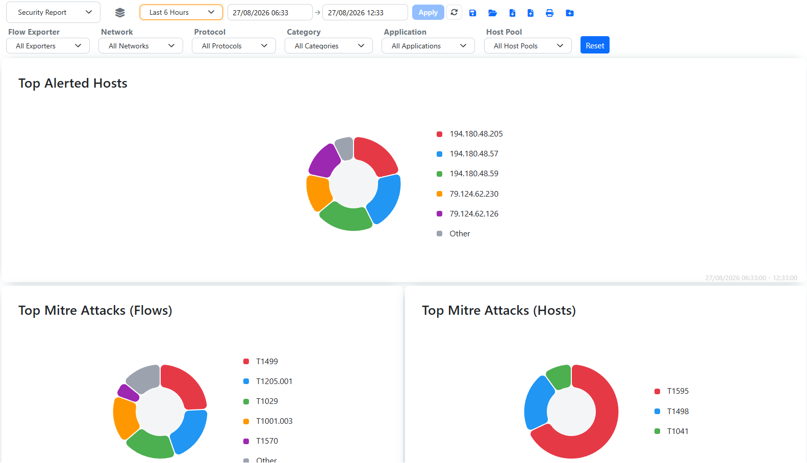
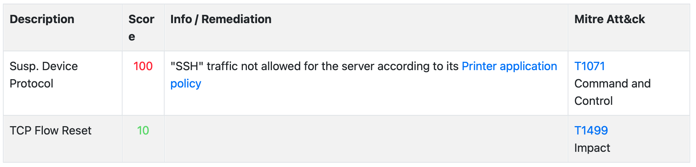

Mitre Классификация
ntopng фактически предлагает углубленную информацию о производительности и безопасности сети. одной из его мощных функций является способность обнаруживать и инициировать оповещения, связанные к вопросам сетевой безопасности. Эти оповещения сопоставляются с структурой MITRE ATT&CK, всемирно признанная база знаний о тактике и методах противника. Эта интеграция усиливает ntopng, обеспечивая структурированное понимание природы этих угроз, связывая их с конкретными MITRE ATT&CK идентификаторами. В этом разделе описывается, как ntopng интегрируется с MITRE ATT&CK структурой и как пользователи могут перемещаться и интерпретировать связанные данные в ntopng.
Mitre ATT&CK Интеграция фреймворка
Структура MITRE ATT&CK представляет собой тщательно подобранную базу знаний и модель для киберпреступников. поведение, включая всеобъемлющую матрицу тактик, техник и процедур которые используют противники. Путем сопоставления предупреждений безопасности с конкретными идентификаторами ATT&CK, ntopng позволяет пользователям понять контекст каждого оповещения с точки зрения противника поведение и цели:
Каждое предупреждение безопасности в ntopng связано с определенным идентификатором MITRE ATT&CK, предоставление контекста о тактике и методах, использованных в атаке.
Улучшенное реагирование на инциденты: благодаря пониманию идентификатора ATT&CK, связанного с оповещением, команды безопасности могут расставлять приоритеты и реагировать более эффективно в зависимости от серьезности и характер угрозы.
Комплексные отчеты о безопасности: ntopng предлагает визуальное представление большинства распространенные MITRE атаки, тактики и методы с помощью отчета о безопасности, позволяющего для быстрого обзора ситуации в области безопасности.
Отчет о безопасности
Отчет о безопасности можно найти на странице «Отчеты», выбрав его из списка. или доступные отчеты в раскрывающемся списке. Этот отчет визуально представляет распределение обнаруженных атак, классифицированных по MITRE тактикам, методам и конкретным ATT&CK идентификаторам. Это позволяет пользователям быстро оценить наиболее распространенные типы атак и их распространенность. Для каждой классификации отображаются наиболее частые атаки. происходящие атаки.

Отчет о безопасности
Обозреватель оповещений
В обозревателе оповещений каждое оповещение потока или хоста, инициированное ntopng, отображается с соответствующая ему классификация MITRE ATT&CK (ID, тактика, техника). Этот раздел позволяет пользователям быстро определить характер угрозы, обратившись к соответствующему ATT&CK Идентификатор.
Пользователи также могут фильтровать оповещения на основе определенного идентификатора ATT&CK, тактики или техники, чтобы сосредоточиться по отдельным видам угроз.

Mitre Классификация в Alert Explorer
Подробности оповещения
Нажатие на оповещение (или поток) ntopng развернет представление и отобразит подробную информацию. включая идентификатор ATT&CK и соответствующее описание тактики для каждого статуса потока и проблема, которая способствовала срабатыванию оповещения.

Mitre Классификация в деталях оповещения